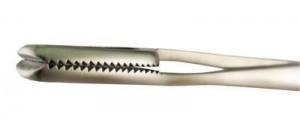
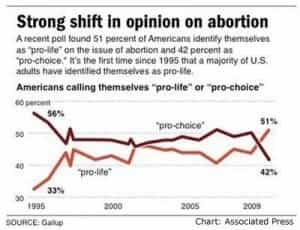

< < < Back
The Ugly Truth About Abortion From A Doctor Who Performed Them – Return Of Kings
Get ready to be triggered.
A former abortionist who turned against killing unborn children has just released a series of videos on YouTube explaining the truth behind abortion. Dr. Anthony Levantino uses the animated series to illustrate the procedures that claim some 3,000 lives a day in abortion clinics like the one he used to work in. That number represents far more deaths than those caused by gun violence, an issue liberals are obsessed with. An incredible 83 times more unborn humans are killed by abortion each year than all deaths by gun violence. Remove gang-related gun violence from the equation and there is a 0.0008% chance of dying at the hands of a gunman on a shooting rampage. However, a preborn baby has a 20% or 1 in 5 shot at being killed using one of the methods we will be discussing.
Dr. Levantino describes the gut-wrenching experience he had which made him change his mind on abortion. He was performing a 2nd trimester abortion when he became physically ill while doing the procedure. However, he could not stop until the procedure was complete.
I looked, I literally looked at that pile of baby parts on the table, and I didn’t see all the things that had sustained me all those years. I didn’t see what a wonderful doctor I was helping her with her problem. I didn’t see her wonderful right to choose, and I didn’t even see the $800 cash I just made in 15 minutes. All I could see was somebody’s son or daughter.
Suddenly, this was looking really different to me. For the first time in my life it hit me very powerfully, that this woman had come to me figuratively and said…here’s $800, kill my baby. And I was the type of person who would look right back at her very calmly, and say why sure, I’ll do that.
When you finally figure out…that killing a baby that big for money is wrong, it doesn’t take you too long to figure out it doesn’t matter if the baby is this big, or this big, or even this big, it’s all the same.
Just as an illustration of the cognitive dissonance feminists have on this issue, you can be imprisoned for up to two years or fined up to $250,000 for disturbing a Bald Eagle’s egg, but sucking a live, fertilized human egg out of the womb through a suction catheter is perfectly fine. Apparently, a bird’s life is more valuable than another human being’s using this logic.
Killing a fertilized human egg is less a concern than killing an eagle egg to feminists
One Million Babies A Year
Around one million women a year (long-term average) choose these gruesome methods of dealing with unwanted children. While both the man and woman are equally to blame for the conception, only one party has the power to end the pregnancy. Men have no choice whatsoever in the matter legally, they cannot stop their child from being aborted, nor can they force the woman to have an abortion. However, men can be ordered to either pay child support or go to prison under current law if the child is born. It is another example of a catch-22 the law has created for fathers.
Shocking Statistics
A whopping 40% of unwanted pregnancies end in abortion, and 1 in 5 pregnancies overall end in abortion in the United States. This, in the richest country in the world where social welfare programs, child support, adoption, and other means are readily available to women who choose life. Not to mention the importance of selecting the right male to be the father before conception, a process that used to be of utmost importance to families before the nuclear family was torn apart by feminism and the welfare state.
Around 89% of all abortions are performed in the first trimester, but even these methods involve babies that are more developed than most people think.
That still leaves a full 1 in 10 abortions that are performed in the second and third trimesters, and as you will see those methods are far more disturbing. At the federal level, abortion is legal through all nine months of pregnancy. Some states have restrictions on abortion after the first trimester, while others do not.
Less than 1% of all abortions are performed because of rape or incest, striking down one of the feminists’ main arguments for abortion.
Most women don’t find out they’re pregnant until week five or six of the pregnancy, and even even as early as eight to nine weeks into the pregnancy the embryo is readily recognizable as a human being. By 12 weeks or near the end of the first trimester, the then fetus is undeniably human in appearance.
Weeks 8-10, and 12 of pregnancy
Abortion Truth Hidden Behind Orwellian “Newspeak”
Lila Rose, president of Live Action, the group who produced the video series said:
The abortion lobby masks the procedure in euphemisms. Terminating the pregnancy, tissue mass, product of conception. The majority of the public has no clue about what abortion really does to a child in the womb; how developed the child actually is during an abortion; and the risks of abortion to the mother’s health and safety.
1st Trimester: Abortion Pills
This procedure is done through nine weeks into the pregnancy. It has a high failure rate statistically, so some women will have to come back for an aspiration (suction) abortion. RU-486 is administered which blocks progesterone and cuts off the blood supply and nutrition to the baby, causing the baby to die. After that, another medicine is administered to cause bleeding and contractions that then expel the unwanted embryo from the womb.
1st Trimester: Aspiration (Suction)
Sadly, sucking the baby out of the womb through a tube is the most frequently performed abortion. A suction catheter is inserted into the womb to extract the fetus. At this point in the pregnancy, when most aspiration abortions are done, the preborn baby has a heartbeat, fingers, legs, toes, and bones that are still weak and fragile.
The suction catheter is then turned on, tearing the baby apart as it is sucked through the catheter into a tube.
2nd Trimester: Dilation and Evacuation

The jaws of a sopher clamp, used to tear the baby out of the womb limb by limb
During the second trimester, a sopher clamp and speculum are used to dismember the unwanted baby from the womb. Limb by limb, the baby is torn apart by the sopher clamp and eventually the skull is crushed into pieces that can then be pulled out through the cervix.
3rd Trimester: Injection And Stillbirth
The third trimester abortion kills an infant that is almost fully developed and viable. Usually, a lethal dose of digoxin is injected into the baby, causing cardiac arrest. Then, birth is medically induced to cause the baby to be delivered stillborn.
Dr. Levantino says that in the hundreds of lives of women he saved who were having third trimester complications, not one of them required the baby to be killed. A live delivery saves the life of the mother, and usually, of the baby. He explains, in detail, why late-term abortions are almost never medically necessary.
It’s My Body
A common argument used by feminists who respond to Dr. Levantino’s video series is deconstructed by YouTube commenter Marquis Read. Read strikes down the solipsistic “It’s my body and I’ll do whatever I want!” argument posted as a response to Dr. Levantino’s videos here:
You see a baby get torn to pieces and you still think it is about the woman? That is selfish, and wicked.
As does Die Cis Scum.
The little human is YOUR body? It’s living in your body, that’s all.
Outlaw Or Educate
Being a firm believer in personal freedom, I generally do not like for government to tell people what they should do with their lives. I believe in a free society with a minimum of rules and regulations as originally intended by the founders of our once-great but failing republic. However, after seeing these procedures, I can never look at abortion the same way again. I do not see how anyone can see the reality of abortion and say it’s not murder. It’s obvious that life begins at conception.

Changing attitudes on abortion have been seen over the last generation
It seems as more and more people learn about the grim and gruesome realities of abortion, the tide is turning in favor of life according to this Gallup series of polls. I will leave it to you…should this be outlawed or should people be honestly and openly educated on the grim realities of abortion then left to make their own choices? To me, if we do not protect the weakest and most helpless among us, we have failed as a civilized society.
Read More: I Hope Tool Releases An Album This Year